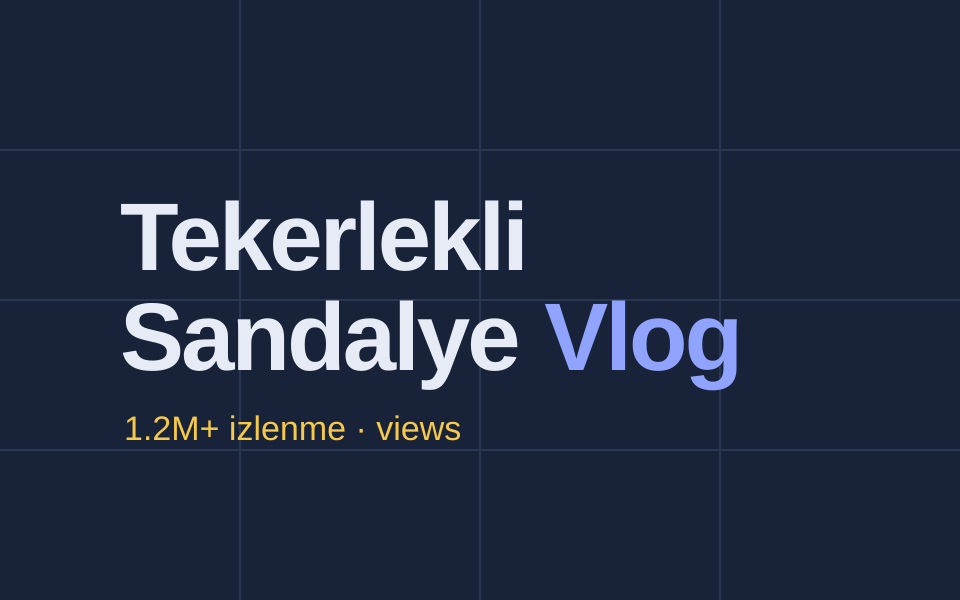

I’m a Social Work student at Istanbul Sabahattin Zaim University and the founder of En2Studios, a game and digital product studio.
- University
- Social Work Istanbul Sabahattin Zaim University, 2nd year
- Studio
- En2Studios Founder. Games and digital products
Featured videos
See the projectContent I create about accessibility as a wheelchair user. More than 1.2 million views across TikTok and Instagram.
Projects
See all-
 Founder · Game and digital product studio
En2Studios
A studio building games, digital products for businesses and websites. Its first game is in development.
Founder · Game and digital product studio
En2Studios
A studio building games, digital products for businesses and websites. Its first game is in development.
-

Content creator · Instagram and TikTok Wheelchair Vlog Videos about daily life, travel and accessibility as a wheelchair user. More than 1.2 million views on TikTok and Instagram.